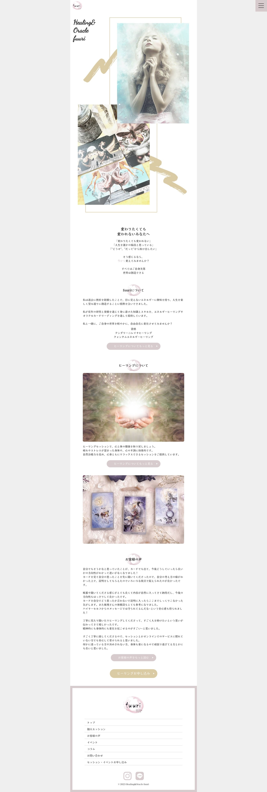
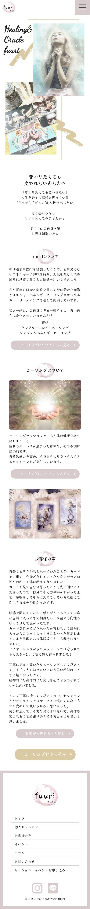

知人が行っているヒーリングサービスのWebサイトを作成しました。
メインターゲットがスマホユーザーのため、スマホサイトをベースにデザインしています。
bodyタグにmax-width: 768px;を指定することで、パソコンで閲覧していてもタブレットで見ているようなデザインにしました。
URL
https://fuuri-migaku.com open_in_new
担当
ヒアリング、ワイヤーフレーム、デザイン、コーディング、ワードプレス、SEO、サーバーアップロード
制作期間
1ヶ月
サイトの目的
新規顧客の獲得
ターゲット
人生に漠然とした不安があり、ヒーリングサービスに興味がある40~50代女性
デザインについて
ロゴの淡いピンク色をメインカラーにし、トンマナを合わせたゴールドをアクセントカラーとして配色しました。
また、ページの見出しと各セクション、長文部分でフォントを使い分けることで、デザイン性と可読性を両立しました。
「イベント一覧」ページでは、閲覧した人が親しみを持ちやすいよう、ポラロイド写真のようなデザインにしました。
コーディングについて
まずHTML/CSSで静的サイトを作成してから、PHPを用いてオリジナルテーマ化しました。
お客様の声・イベント・コラムページは、クライアントがブログ感覚で更新できるよう「Custom Post Type UI」と「Smart Custom Fields」を用いて構築しました。 また、記事を追加してもレイアウトが崩れないよう、運用性の高いクラス命名やCSS指定を行いました。
セキュリティ面や迷惑メール対策として、お問い合わせ・お申し込みフォームはGoogleフォームと結びつけています。 フォーム提出後の自動送信メールには、Googleフォームのアドオンを使用しています。
また、タグマネージャーを用いて、Google AnalyticsとGoogle Search Consoleを導入しています。

